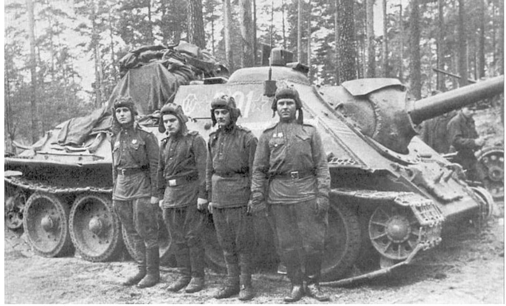
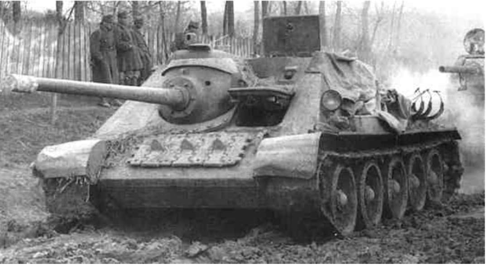
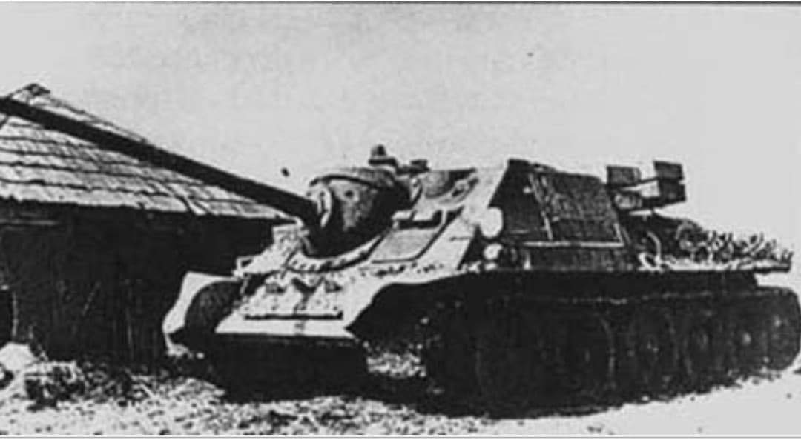

Le canon automoteur moyen conçu pour percer les blindages des Tiger I et Panther allemands

Le SU-85 (Samokhodnaya Ustanovka 85) est un chasseur de chars moyen mis en service par l'Union soviétique au cours de l'année 1943. Conçu sur le châssis éprouvé du char moyen T-34, il a été développé en réponse directe à l'apparition des chars lourds allemands Tiger I et Panzer V Panther sur le Front de l'Est.
En sacrifiant la tourelle rotative au profit d'une casemate fixe blindée, le SU-85 a permis d'embarquer précocement le puissant canon antiaérien modifiée D-5S de 85 mm, rétablissant ainsi l'équilibre antichar au profit de l'Armée rouge.
Développé à l'usine d'ingénierie lourde d'Oural (Uralmash) à Sverdlovsk, le SU-85 dérive du chasseur de chars SU-122. Sa superstructure blindée casematée présente un blindage frontal incliné de 45 mm offrant une excellente protection contre les tirs directs de moyen calibre.
D'une masse de **29,6 tonnes**, il conserve la motorisation diesel V-2-34 V12 de 500 ch du T-34, lui assurant une vitesse maximale de 55 km/h sur route. Son arme maîtresse, le canon de **85 mm D-5S**, était capable de perforer le blindage d'un Tiger I à une distance d'engagement de 1 000 mètres.

Entré en combat à la fin de l'été 1943 lors des batailles qui suivirent l'affrontement de Koursk, le SU-85 équipa les régiments d'artillerie automotrice légers et moyens de l'Armée rouge.
Il s'illustra particulièrement lors des grandes offensives de 1944 (notamment l'**Opération Bagration**), fournissant un soutien antichar mobile essentiel pour accompagner les colonnes de T-34. Il restera en première ligne jusqu'à l'arrivée massive du T-34/85 (doté d'une tourelle armée du même calibre) et de son successeur plus lourdement armé, le SU-100.

Produit à environ **2 050 exemplaires** entre août 1943 et fin 1944, le SU-85 est considéré comme une réussite tactique et industrielle majeure.
Sa conception pragmatique a ouvert la voie au célèbre **SU-100**, qui reprendra une casemate similaire équipée du canon D-10S de 100 mm pour détruire les blindés lourds de la fin du conflit.
Page du Musée HOP WW2 – Section Véhicules Terrestres Soviétiques